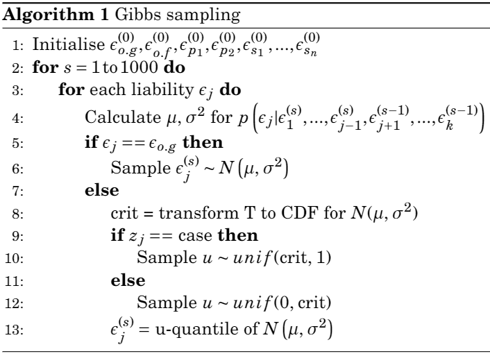
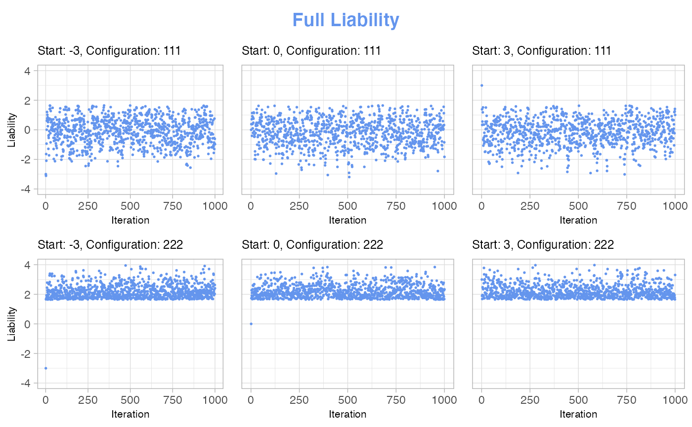
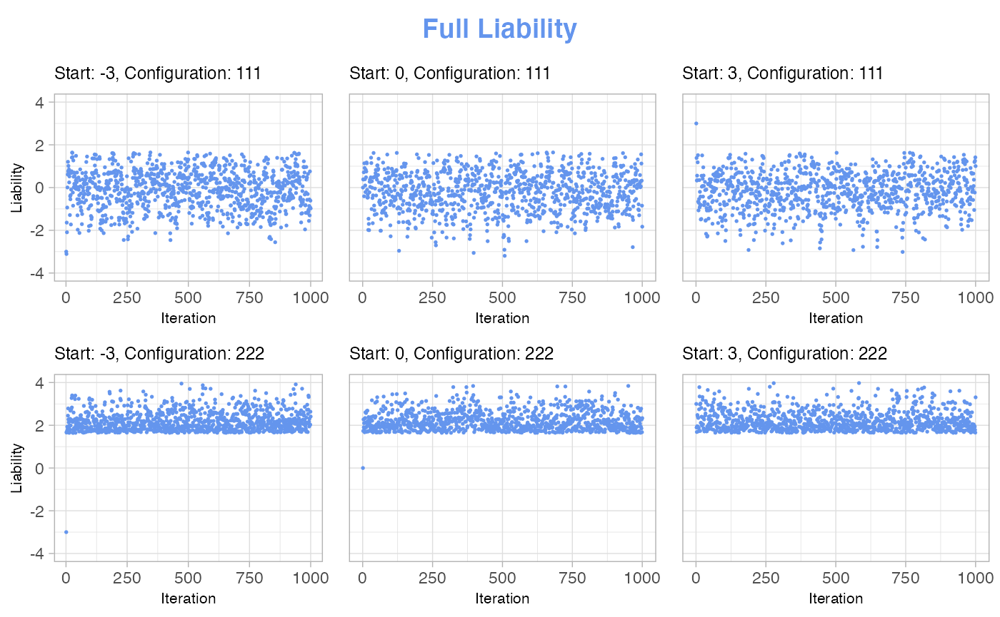
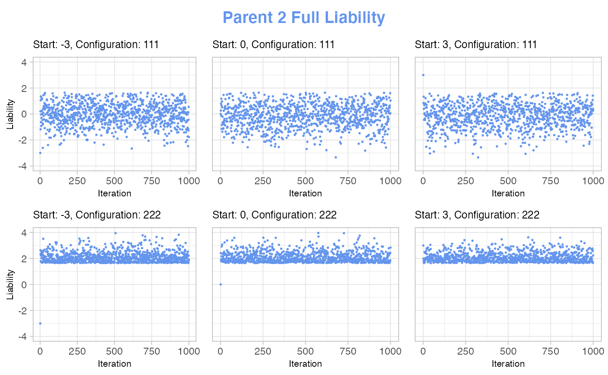
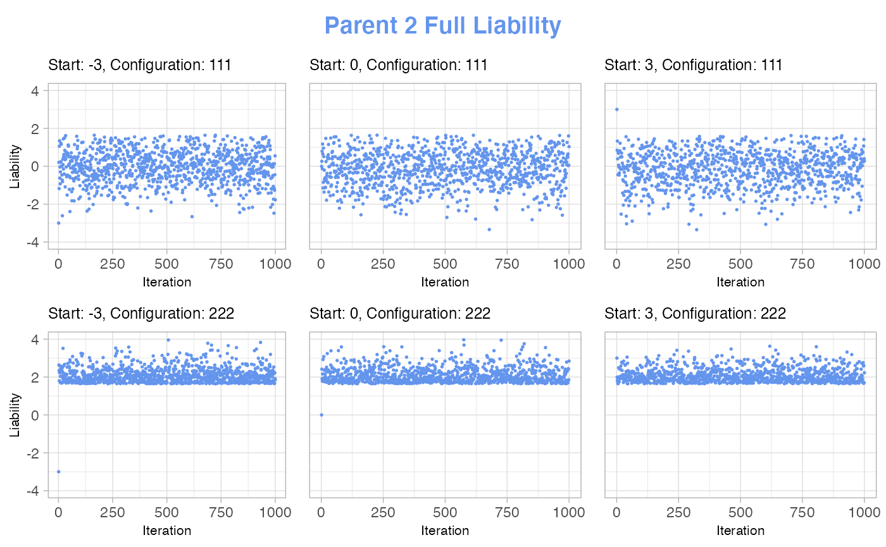

The refined phenotype introduced by Hujoel et al. (2020) relies on the assumption that liabilities follow a multivariate normal distribution. A more detailed explanation of these assumptions can be found in vignette("liability-distribution").
The proposed phenotype consists of estimating the genetic liability of a family configuration. This is called the posterior mean genetic liability. In this vignette, we explain how we sample genetic liabilities and compute posterior mean genetic liabilities.
Gibbs sampling
An efficient way of obtaining genetic liabilities that conform to a certain conditional distribution (i.e. fits a certain configuration), is through Gibbs sampling. We can use Gibbs sampling since we can calculate the marginal distribution of each liability conditional on the other liabilities. To further optimise this process, we transform the full liabilities to make sure that the area we sample from fits the configuration.
The procedure is outlined in the below pseudocode. Here, \(T\) denotes the threshold used in the liabiity threshold model for assignment of phenotype status, \(\epsilon\) are liabilities and \(z_j\) is the phenotype status of the individual having full liability \(\epsilon_j\). Finally, we note that in the implementation in geneference, the for-loop starting at line 2 instead goes to the chosen number of burn-in iterations, which we talk more about in the concluding part of this vignette. Furthermore, the algorithm is nested inside a while-loop, which breaks when the standard error of mean genetic liability is below 0.01.

Intuitively, the effect of the transformation can be thought of as forcing the samples to live in the area we expect from the configuration. So, instead of steadily moving closer to convergence, we immediately jump to the relevant area. We therefore expect very quick convergence of the sampler.
Plotting convergence
One very important aspect of using Gibbs sampling is to ensure convergence of the sampler. We chose to do this through visualisation, i.e. plotting the values generated by the Gibbs sampler and seeing how many iterations are needed before the values seem stable. In this vignette, we showcase some of the plots we used when implementing our Gibbs sampler.
The code used for generating the data in this vignette is slightly different from the sampler implemented in our package. The general idea is the same, but it differs in that we save all values generated, whereas we in geneference only save genetic liabilities after burn-in. This is less efficient, but enables us to plot the convergence.
Below, we show a few of the plots we used in our implementation process for deciding on a fitting number of iterations in the burn-in of the sampler, as well as a starting value for the liabilities.
In these examples, we deal with a setup of 2 parents and no siblings. In our specification of case-control status, 1 means control and 2 means case. So, for instance, the configuration string “222” means that both the individual, parent number 1 and parent number 2 are all cases, while “111” means that everyone are controls.
For each of the chosen configurations, we draw 1000 samples with different starting values, then we plot how the liabilities develop over time to see when they are no longer dependent on the starting value.
 
 

Conclusion
The plots show that all liabilities are independent of their starting value after just a couple of samples, and that it does not matter which starting value is used. This is the case for both of the shown configurations. Therefore, we can conclude that there is no difference in the burn-in iterations for different starting values and that the burn-in is done after just a couple of iterations.
In other words, the Gibbs sampler performs as expected.
The current implementation of the Gibbs sampler uses 3 as its starting value for each liability.
To make sure that all liabilities are independent of the starting value for any given configuration, we have set the number of iterations for the burn-in to be 200. This should be enough iterations to ensure any configuration has valid liabilities to sample from.